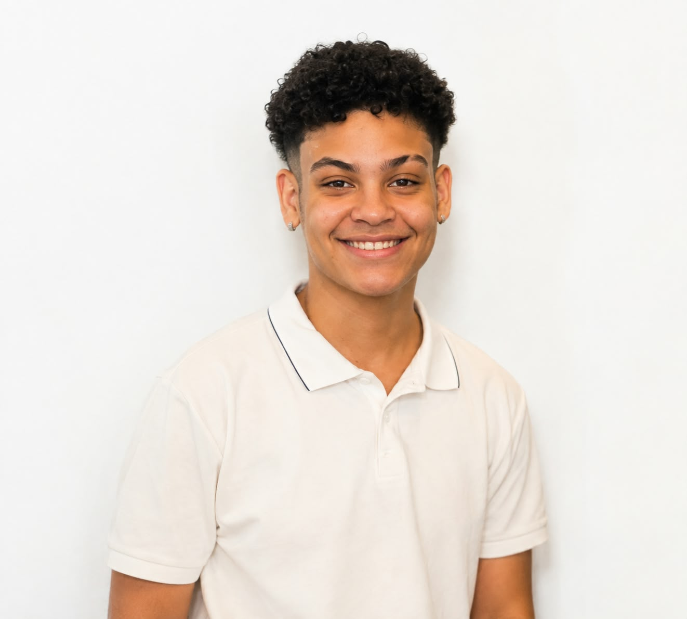

Jiu-jitsu

Pratico jiu-jitsu há cerca de 3 anos, atualmente na faixa azul e participando de competições para acumular mais títulos.
Olá, eu sou
Estudante de Sistemas de Informação na UDF, apaixonada por tecnologia e por aprender coisas novas todos os dias.

Eu sou de Brasilia-DF, nascida e criada aqui. O que me fez esse escolher esse curso
foi a paixão por técnologia e a grande identificação com gestão de negócios.
Nas horas livres:
Atualmente finalizando o primeiro semestre focada em lógica de programação.
Concluído.
inglês e informática
Pratico jiu-jitsu há cerca de 3 anos, atualmente na faixa azul e participando de competições para acumular mais títulos.
Escuto todos os tipos de músicas mas o que eu mais escuto é o funk submundo.
Leio livros principalmente politicos e voltados para revolução.
No último ano não realizei muitas viagens, mas fui para São Paulo a trabalho e fiz diversas trilhas.
Vamos conversar? Me chame por uma das redes abaixo ou use o formulário.
📧 fernanda.dev.si@gmail.com 💻 github.com/ 🔗 linkedin.com/in/fernanda cristina Monteiro© Fernanda Cristina Monteiro. Todos os direitos reservados.